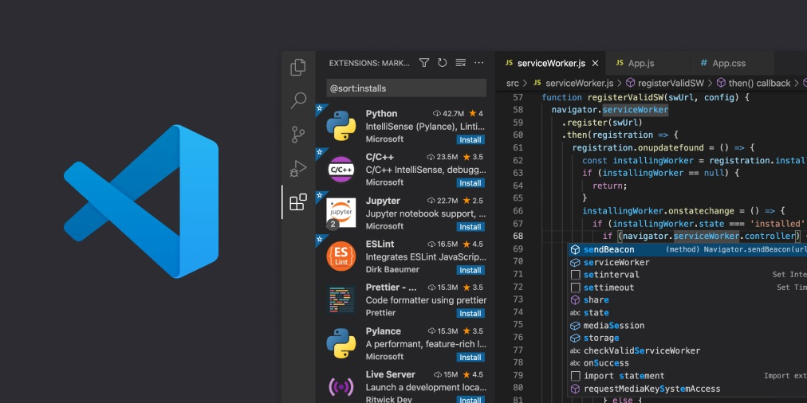
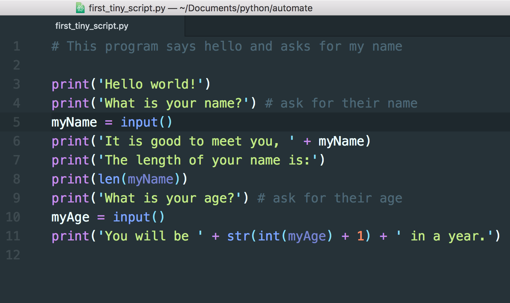
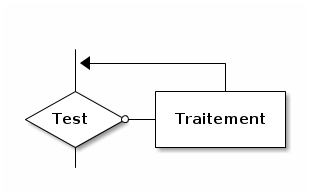
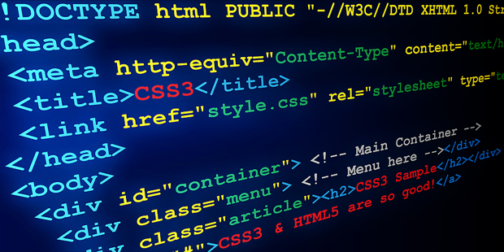
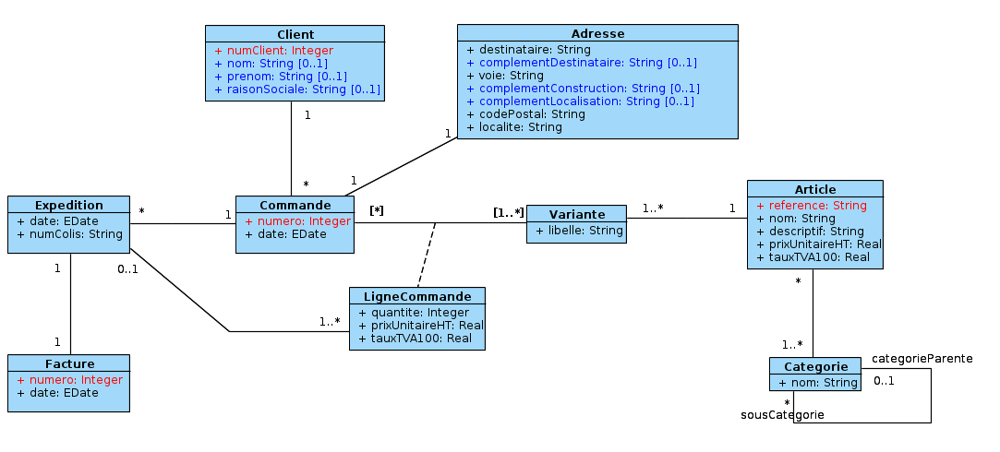
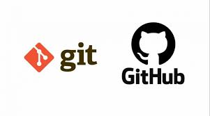

Bloc de Compétences 3
Créer des outils et applications informatiques pour les R&T
Démarche réflexive et analytique sur l'automatisation système, le développement d'applications Web et mobiles, la programmation réseau par sockets et la gestion de bases de données.
AC23.01 // Niveau 2
 [Extrait Script Python & Logs d'Exécution]
[Extrait Script Python & Logs d'Exécution]
Automatiser l'administration système avec des scripts
- Ce que j'ai fait : Développement de scripts en Python et Bash pour automatiser le déploiement de configurations hôtes, l'archivage planifié des journaux et la vérification automatisée de l'état des liaisons réseaux.
- Pourquoi je l'ai fait : Pour supprimer les tâches manuelles redondantes, fiabiliser la maintenance et réagir immédiatement en cas de panne de service.
- Comment je l'ai fait : Utilisation des modules système (os, sys, subprocess), manipulation d'expressions régulières (Regex) et planification des exécutions régulières via cron sur environnement Linux.
- Mes difficultés : Prendre en compte la gestion des erreurs d'E/S et les interruptions imprévues de flux lors d'accès distants par clés SSH.
- Ce que j'en ai appris : L'écriture d'un script d'automatisation robuste exige un traitement exhaustif des codes de retour d'erreurs pour ne jamais laisser le système dans un état instable.
- Ce que je ferais autrement : Intégrer un système de logging structuré (format JSON ou syslog standard) plutôt que de simples affichages consoles.
Trace Pertinente
[Extrait Script Python & Logs d'Exécution]
AC23.02 // Niveau 2
 [Architecture MVC Flask & Interface Web]
[Architecture MVC Flask & Interface Web]
Développer une application à partir d'un cahier des charges donné, pour le Web ou les périphériques mobiles
- Ce que j'ai fait : Conception et implémentation d'une application Web dynamique complète (SAÉ 2.03) basée sur le micro-framework Python Flask, avec gestion des routes, authentification et affichage responsive sous Bootstrap.
- Pourquoi je l'ai fait : Pour matérialiser une interface utilisateur interactive permettant la restitution de données techniques et la gestion d'informations métiers selon un cahier des charges.
- Comment je l'ai fait : Découpage modulaire du projet en architecture MVC (Modèle-Vue-Contrôleur), utilisation du moteur de templates Jinja2 et intégration de conteneurs Docker pour l'exécution locale.
- Mes difficultés : Maintenir une séparation stricte entre la logique de traitement des données côté serveur (Flask) et le rendu dynamique des pages côté client.
- Ce que j'en ai appris : Le développement web applicatif moderne repose sur une organisation rigoureuse du code pour garantir l'évolutivité et la maintenance du projet.
- Ce que je ferais autrement : Rédiger des tests unitaires automatisés (PyTest) pour valider systématiquement les routes HTTP avant chaque intégration.
Trace Pertinente
[Architecture MVC Flask & Interface Web]
AC23.03 // Niveau 2
 [Capture Échanges Sockets TCP & Code Python]
[Capture Échanges Sockets TCP & Code Python]
Utiliser un protocole réseau pour programmer une application client/serveur
- Ce que j'ai fait : Programmation d'applications communicantes basées sur les sockets TCP/IP en Python, implémentation d'un protocole d'échange de messages sur mesure et consommation d'APIs REST via des requêtes HTTP.
- Pourquoi je l'ai fait : Pour appréhender concrètement les mécanismes de transport, d'encapsulation et de synchronisation des échanges applicatifs à travers la couche réseau.
- Comment je l'ai fait : Utilisation de la bibliothèque socket standard (fonctions bind, listen, accept, connect), sérialisation des charges utiles en JSON et écoute sur des ports dédiés.
- Mes difficultés : Gérer les blocages d'E/S (blocking I/O) et s'assurer de la bonne détection de la fermeture impromptue du socket côté client.
- Ce que j'en ai appris : La programmation réseau exige de respecter scrupuleusement les automates d'états des protocoles pour éviter les désynchronisations ou fuites de mémoire.
- Ce que je ferais autrement : Implémenter une gestion non-bloquante ou multithreadée du serveur pour traiter plusieurs connexions clientes simultanées avec fluidité.
Trace Pertinente
[Capture Échanges Sockets TCP & Code Python]
AC23.04 // Niveau 2
 [Console PostgreSQL Privilèges & pg_dump]
[Console PostgreSQL Privilèges & pg_dump]
Installer, administrer un système de gestion de données
- Ce que j'ai fait : Installation et administration de serveurs de bases de données relationnelles (PostgreSQL et MySQL/MariaDB), configuration des autorisations utilisateurs, gestion des schémas et mise en place de procédures de sauvegarde/restauration (pg_dump).
- Pourquoi je l'ai fait : Pour garantir la disponibilité, la sécurité d'accès et la pérennité des données exploitées par les architectures et services du réseau.
- Comment je l'ai fait : Configuration des fichiers de sécurité (
pg_hba.conf), création de bases dédiées, attribution des privilèges selon le principe du moindre privilège et automatisation des sauvegardes. - Mes difficultés : Ajuster les règles d'écoute réseau du SGBD pour autoriser les connexions distantes de l'application tout en bloquant les accès non authentifiés.
- Ce que j'en ai appris : L'administration d'un SGBD ne s'arrête pas à la création des tables : la politique de sauvegarde et le contrôle des privilèges d'accès sont prioritaires.
- Ce que je ferais autrement : Mettre en place un plan de reprise d'activité (PRA) automatisé avec réplication des bases vers un serveur de secours.
Trace Pertinente
[Console PostgreSQL Privilèges & pg_dump]
AC23.05 // Niveau 2
 [Code Requêtes Paramétrées & Rendu Web]
[Code Requêtes Paramétrées & Rendu Web]
Accéder à un ensemble de données depuis une application et/ou un site web
- Ce que j'ai fait : Connexion de scripts Python et de serveurs Web Flask à des bases de données relationnelles via des connecteurs SQL (PyMySQL, psycopg2), écriture de requêtes paramétrées sécurisées et restitution dynamique des résultats.
- Pourquoi je l'ai fait : Pour permettre à une interface applicative d'interagir avec des données persistantes (lecture, insertion, mise à jour) de manière fluide et sécurisée.
- Comment je l'ai fait : Gestion des pools de connexions, exécution de requêtes préparées pour se prémunir des injections SQL et mapping des jeux d'enregistrements vers des dictionnaires Python.
- Mes difficultés : Optimiser le temps d'exécution des requêtes comportant des jointures multiples pour éviter les latences de chargement sur la page Web.
- Ce que j'en ai appris : L'accès aux données doit systématiquement utiliser des requêtes préparées pour neutraliser les vulnérabilités de type injection SQL.
- Ce que je ferais autrement : Utiliser un ORM (comme SQLAlchemy) pour standardiser et sécuriser encore davantage la manipulation des entités de la base de données.
Trace Pertinente
[Code Requêtes Paramétrées & Rendu Web]
AC13.01 // Outils Informatiques
Utiliser un système informatique et ses outils
- Ce que j'ai fait : J'ai configuré mes environnements de développement, utilisé des utilitaires CLI système et manipulé des éditeurs de code avancés au quotidien.
- Pourquoi je l'ai fait : Pour optimiser mon poste de travail, accélérer mon flux de développement et interagir efficacement avec les ressources de la machine.
- Comment je l'ai fait : En appliquant les principes étudiés en introduction à l'informatique, via l'usage de VS Code, de terminaux intégrés et de gestionnaires de paquets.
- Mes difficultés : Maîtriser parfaitement les redirections de flux d'entrée/sortie (`>`, `|`) en ligne de commande pour enchaîner les tâches complexes.
- Ce que j'en ai appris : Que le terminal est l'outil le plus puissant d'un informaticien dès lors qu'on en comprend la logique profonde.
- Ce que je ferais autrement : Créer des alias personnalisés pour mes commandes redondantes afin d'automatiser mes routines dès le début de l'année.
Trace Pertinente

[Capture CLI / Configuration Environnement]
AC13.02 // Programmation Fondamentale
Lire, exécuter, corriger et modifier un programme
- Ce que j'ai fait : J'ai analysé et mis à jour des scripts de tri de données issus de data.gouv.fr et codé sous forte contrainte temporelle (Nuit du Code).
- Pourquoi je l'ai fait : Pour corriger des anomalies logiques au sein de scripts existants et adapter le traitement de données à de nouveaux besoins applicatifs.
- Comment je l'ai fait : En exploitant les bases de Python acquises en NSI et consolidées dans le module R1.07 (Algorithmique et Programmation).
- Mes difficultés : Retracer la logique d'un code complexe écrit par un tiers sans aucune documentation ou commentaire initial.
- Ce que j'en ai appris : Que le débogage méthodique pas-à-pas est une compétence cruciale, supérieure à la simple écriture de code brut.
- Ce que je ferais autrement : Imposer l'usage systématique de commentaires et de docstrings à chaque fonction modifiée pour faciliter le travail de l'équipe.
Trace Pertinente

[Extrait Script Python Débogué]
AC13.03 // Algorithmique
Traduire un algorithme, dans un langage donné et pour un environnement donné
- Ce que j'ai fait : J'ai formalisé des logiques métiers sous forme de pseudo-code, puis je les ai traduites en structures Python fonctionnelles.
- Pourquoi je l'ai fait : Pour dissocier la réflexion pure (logique de résolution) des contraintes strictes de syntaxe d'un langage informatique.
- Comment je l'ai fait : En transposant des structures conditionnelles imbriquées et des boucles (`while`/`for`) définies lors de la SAÉ 1.04.
- Mes difficultés : Traduire proprement des algorithmes récursifs ou des structures imbriquées complexes sans commettre d'erreur d'indentation.
- Ce que j'en ai appris : Qu'un algorithme bien pensé et documenté sur papier se traduit sans effort dans n'importe quel langage de programmation.
- Ce que je ferais autrement : Valider systématiquement mon pseudo-code par un test d'exécution "à la main" avant de commencer le codage.
Trace Pertinente

[Pseudo-Code vs Traduction Python]
AC13.04 // Web Dev
Connaître l’architecture et les technologies d’un site Web
- Ce que j'ai fait : J'ai conçu la structure sémantique et la feuille de style avancée de ce site web adaptatif (responsive design).
- Pourquoi je l'ai fait : Pour matérialiser mon portfolio dans le cadre de la SAÉ 14 et prouver ma compréhension de l'affichage de contenu côté client.
- Comment je l'ai fait : En exploitant les cours du module Web (R1.09), en codant en HTML5 sémantique et en implémentant du CSS3 avancé (variables, flexbox).
- Mes difficultés : Harmoniser l'affichage et préserver la fluidité esthétique lors des changements abrupts de résolution (breakpoints sur mobiles).
- Ce que j'en ai appris : Que le développement web exige une organisation irréprochable des sélecteurs pour éviter les conflits d'héritage de styles.
- Ce que je ferais autrement : Utiliser des frameworks comme Bootstrap de manière encore plus native pour standardiser l'UI dès les premières phases du projet.
Trace Pertinente

[Extrait HTML Structurel / Fichier CSS]
AC13.05 // Gestion de Données
Choisir les mécanismes de gestion de données adaptés au développement de l'outil et argumenter ses choix
- Ce que j'ai fait : J'ai structuré des modèles relationnels basiques, modélisé des tables de stockage et analysé les structures de fichiers adaptées aux scripts.
- Pourquoi je l'ai fait : Pour garantir l'intégrité, la rapidité d'accès et la cohérence des données manipulées par mes outils d'automatisation.
- Comment je l'ai fait : En m'appuyant sur les fondamentaux des bases de données étudiés lors du second semestre, en structurant des modèles conceptuels.
- Mes difficultés : Établir correctement les relations de cardinalité complexes sans dupliquer inutilement l'information dans les tables.
- Ce que j'en ai appris : Qu'une mauvaise modélisation initiale des données paralyse l'application future, peu importe la qualité du code de programmation.
- Ce que je ferais autrement : Valider mon modèle conceptuel (MCD) auprès de mes pairs avant de lancer l'écriture des requêtes de création.
Trace Pertinente

[Schéma Relationnel / Modèle MCD]
AC13.06 // Travail Collaboratif
S’intégrer dans un environnement propice au développement et au travail collaboratif
- Ce que j'ai fait : J'ai collaboré en équipe lors des SAÉ, travaillé en logistique d'entrepôt (CEVA) et maintenu une discipline d'entraînement rigoureuse.
- Pourquoi je l'ai fait : Pour acquérir des automatismes d'organisation collective et développer une régularité de travail essentielle aux projets d'envergure.
- Comment je l'ai fait : En synchronisant les tâches avec mes équipiers en SAÉ et en respectant scrupuleusement les cadences et consignes en entreprise.
- Mes difficultés : Ajuster la répartition du travail lorsque les niveaux d'implication ou les plannings des membres du groupe divergeaient.
- Ce que j'en ai appris : Que la transparence et la communication régulière sont indispensables pour maintenir l'efficacité d'un collectif (équipe de dev ou brigade logistique).
- Ce que je ferais autrement : Mettre en place un outil de suivi de projet commun (Git / Kanban) dès le premier jour de la SAÉ pour éviter les doublons.
Trace Pertinente

[Capture Suivi de Projet / Badge Pro]